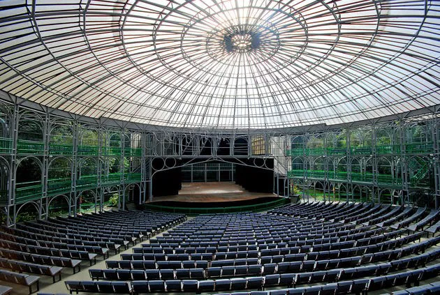
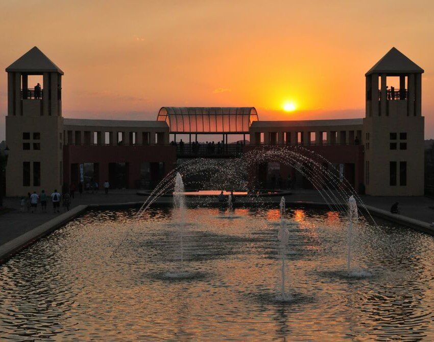

Curitiba
Curitiba, capital do estado do Paraná, é amplamente reconhecida como um modelo de planejamento urbano e sustentabilidade, sendo uma das cidades mais organizadas e agradáveis para viver no Brasil. Além disso, é um destino turístico importante no sul do país, famosa por sua combinação de modernidade, natureza e cultura. Curitiba atrai turistas com suas áreas verdes, como parques e jardins, além de sua arquitetura inovadora e rica cena cultural.
A cidade também é conhecida por sua gastronomia variada e pela preservação de tradições imigrantes, especialmente da cultura polonesa, alemã, italiana e ucraniana. Seu clima temperado, aliada à infraestrutura moderna e à grande quantidade de opções de lazer ao ar livre, faz de Curitiba um destino ideal para turistas que buscam uma experiência diversificada e rica culturalmente, sem perder a conexão com a natureza.
Principais pontos turísticos
- Jardim Botânico de Curitiba
- Ópera de Arame 
- Parque Tanguá 
- Museu Oscar Niemeyer (MON)
- Largo da Ordem
O Jardim Botânico é um dos maiores símbolos de Curitiba, conhecido por sua estufa de vidro, inspirada no Palácio de Cristal de Londres. O jardim conta com uma vasta área verde, lagos e trilhas, sendo um excelente local para caminhadas e lazer.
É um dos maiores cartões-postais da cidade, atrai turistas pela beleza natural, arquitetura única e pela tranquilidade que oferece em meio ao ambiente urbano.
A Ópera de Arame é uma construção metálica e transparente, que fica em meio a um cenário natural de montanhas e vegetação. Sua estrutura aramada se integra perfeitamente com o entorno, e é um local utilizado para apresentações culturais e musicais.
A Ópera de Arame é um dos maiores ícones culturais de Curitiba, combinando arquitetura inovadora com beleza natural. Ela é um centro de eventos e um ponto turístico indispensável na cidade.
O Parque Tanguá é um dos mais belos da cidade, com paisagens deslumbrantes, lagos, áreas para caminhadas e um mirante com vista panorâmica de Curitiba. A principal atração do parque é o túnel construído na rocha, que leva os visitantes a um ponto de observação único.
Ideal para atividades ao ar livre, como caminhadas, piqueniques e observação da natureza. O parque oferece também uma ótima vista da cidade e é bastante procurado para a prática de esportes e para quem busca tranquilidade.
O Museu Oscar Niemeyer, também conhecido como "Museu do Olho", é um dos mais importantes espaços culturais da cidade, com uma arquitetura moderna e imponente projetada pelo renomado arquiteto Oscar Niemeyer. O museu abriga exposições de arte contemporânea, arquitetura e design.
É um ponto turístico obrigatório para quem deseja conhecer a arte e a arquitetura moderna em Curitiba. Além disso, o museu frequentemente recebe exposições internacionais de renome.
O Largo da Ordem é um ponto turístico e cultural importante de Curitiba, onde se encontra uma série de construções históricas, como a Igreja de São Francisco e o Museu de Arte da Cidade. Aos domingos, o Largo da Ordem sedia a tradicional Feira de Artesanato, onde é possível encontrar produtos típicos da cidade e do Paraná.
O Largo da Ordem é o centro cultural e histórico de Curitiba, sendo um local onde os turistas podem conhecer um pouco mais sobre a história da cidade, fazer compras e aproveitar a vida local.
Principais pontos gastronômicos
- Restaurante Madalosso
- Localização: Bairro Santa Felicidade.
- Bar do Alemão
- Localização: Bairro São Francisco.
- Café do Viajante
- Localização: Centro de Curitiba.
O Madalosso é um dos restaurantes mais tradicionais de Curitiba, famoso por sua cozinha italiana, especialmente pelos pratos de massas e polenta. O restaurante oferece um ambiente familiar e aconchegante, com uma grande variedade de pratos à la carte e rodízio.
É um destino gastronômico imperdível, especialmente para quem busca uma refeição típica italiana. Santa Felicidade, o bairro onde o restaurante está localizado, é conhecido por sua forte influência da imigração italiana, e o Madalosso reflete essa tradição de maneira impecável.
O Bar do Alemão é famoso por oferecer pratos típicos da culinária alemã, como salsichões, chucrute e pratos com carnes suínas, além de uma vasta carta de chopes e cervejas artesanais. O local também é conhecido por sua decoração rústica e ambiente descontraído.
O Bar do Alemão é uma ótima opção para quem deseja experimentar a culinária germânica em Curitiba. Ele está situado no bairro São Francisco, que possui uma grande influência da imigração alemã e é ideal para quem busca um ambiente descontraído e saborosos pratos típicos.
O Café do Viajante é uma opção charmosa para os amantes de cafés especiais e gastronomia de qualidade. Oferece desde cafés gourmet até sanduíches e bolos caseiros, com um ambiente acolhedor e agradável para uma pausa durante o passeio pela cidade.
É uma excelente escolha para quem deseja um café delicioso e uma experiência tranquila em Curitiba, além de ser um local agradável para socializar e relaxar.
Principais pontos culturais
- Teatro Guaíra
- Localização: Centro de Curitiba.
- Museu Paranaense
- Localização: Centro Histórico de Curitiba.
- Feira do Largo da Ordem
- Localização: Largo da Ordem, Centro Histórico.
- Museu de Arte Contemporânea do Paraná (MAC-PR)
- Localização: Parque São Lourenço.

O Teatro Guaíra é um dos maiores e mais tradicionais teatros de Curitiba, oferecendo uma vasta programação cultural, incluindo peças teatrais, concertos e apresentações de dança. Sua arquitetura é imponente e sua acústica é considerada uma das melhores do Brasil.
É um dos principais centros culturais de Curitiba, sendo fundamental para quem deseja explorar a cena teatral e musical da cidade.
O Museu Paranaense é um dos mais antigos do estado, dedicado à preservação e divulgação da história e cultura do Paraná. O museu exibe coleções sobre arqueologia, etnografia e arte, com destaque para o período colonial e as culturas indígenas.
Fundamental para quem deseja aprender mais sobre a história do Paraná e as origens culturais do estado, com um acervo significativo e representativo.
A Feira do Largo da Ordem acontece todos os domingos e é uma das maiores atrações culturais de Curitiba. Com mais de 100 barracas, a feira reúne artesãos, artistas e produtores locais, vendendo desde artesanato e roupas, até produtos gastronômicos e itens culturais.
Além de ser um excelente lugar para comprar lembranças e produtos locais, a feira também é um ponto de encontro cultural, com apresentações musicais e eventos ao vivo, proporcionando uma experiência única da vida local.

O MAC-PR é um museu dedicado à arte contemporânea, com um acervo que abrange obras de artistas nacionais e internacionais. O museu também realiza exposições temporárias e eventos culturais voltados para as novas tendências artísticas.
É um ponto importante para os apreciadores de arte contemporânea e para quem deseja explorar a cena artística inovadora e criativa de Curitiba.